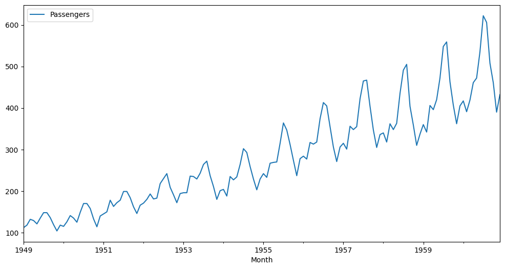

TimesSeries#
import numpy as np
import pandas as pd
from sklearn.preprocessing import MinMaxScaler
def df_to_X_y_multi(df, window_size=2):
X, y = [], []
df = df.to_numpy()
for i in range(len(df) - window_size):
seq_x, seq_y = df[i:i+window_size, :], df[i+window_size, :]
X.append(seq_x)
y.append(seq_y)
return np.array(X), np.array(y)
def df_to_X_y(df, window_size=2):
X, y = [], []
# df = df.to_numpy()
for i in range(len(df) - window_size):
seq_x, seq_y = df[i:i+window_size], df[i+window_size]
X.append(seq_x)
y.append(seq_y)
return np.array(X), np.array(y)
# Get data
url = 'https://raw.githubusercontent.com/dhamvi01/Univariate-Time-Series-using-LSTM/master/airline-passengers.csv'
data = pd.read_csv(url)
# Jumlah data
data.count()
Month 144
Passengers 144
dtype: int64
# Set index dates to data
data["Month"] = pd.to_datetime(data.Month, dayfirst=True)
data.set_index("Month", inplace=True)
# plot data
data.plot(figsize=(12,6)).autoscale(axis='x',tight=True);

df = data.reset_index()['Passengers']
# Skala Data
skala_data = (df.max()-df.min())*0.1
print('Skala Data : ', skala_data)
Skala Data : 51.800000000000004
Timestamp#
window_size = 2
X, y = df_to_X_y(data['Passengers'], window_size)
X.shape, y.shape
((142, 2), (142,))
# column names to X and y data frames
df_X = pd.DataFrame(X, columns=['t-'+str(i) for i in range(window_size-1, -1,-1)])
df_y = pd.DataFrame(y, columns=['t+1 (prediction)'])
# concat df_X and df_y
df = pd.concat([df_X, df_y], axis=1)
Normalisasi#
scaler = MinMaxScaler(feature_range=(0,1))
df = scaler.fit_transform(df)
df
array([[0.01544402, 0.02702703, 0.05405405],
[0.02702703, 0.05405405, 0.04826255],
[0.05405405, 0.04826255, 0.03281853],
[0.04826255, 0.03281853, 0.05984556],
[0.03281853, 0.05984556, 0.08494208],
[0.05984556, 0.08494208, 0.08494208],
[0.08494208, 0.08494208, 0.06177606],
[0.08494208, 0.06177606, 0.02895753],
[0.06177606, 0.02895753, 0. ],
[0.02895753, 0. , 0.02702703],
[0. , 0.02702703, 0.02123552],
[0.02702703, 0.02123552, 0.04247104],
[0.02123552, 0.04247104, 0.07142857],
[0.04247104, 0.07142857, 0.05984556],
[0.07142857, 0.05984556, 0.04054054],
[0.05984556, 0.04054054, 0.08687259],
[0.04054054, 0.08687259, 0.12741313],
[0.08687259, 0.12741313, 0.12741313],
[0.12741313, 0.12741313, 0.1042471 ],
[0.12741313, 0.1042471 , 0.05598456],
[0.1042471 , 0.05598456, 0.01930502],
[0.05598456, 0.01930502, 0.06949807],
[0.01930502, 0.06949807, 0.07915058],
[0.06949807, 0.07915058, 0.08880309],
[0.07915058, 0.08880309, 0.14285714],
[0.08880309, 0.14285714, 0.11389961],
[0.14285714, 0.11389961, 0.13127413],
[0.11389961, 0.13127413, 0.14285714],
[0.13127413, 0.14285714, 0.18339768],
[0.14285714, 0.18339768, 0.18339768],
[0.18339768, 0.18339768, 0.15444015],
[0.18339768, 0.15444015, 0.11196911],
[0.15444015, 0.11196911, 0.08108108],
[0.11196911, 0.08108108, 0.11969112],
[0.08108108, 0.11969112, 0.12934363],
[0.11969112, 0.12934363, 0.14671815],
[0.12934363, 0.14671815, 0.17181467],
[0.14671815, 0.17181467, 0.14864865],
[0.17181467, 0.14864865, 0.15250965],
[0.14864865, 0.15250965, 0.22007722],
[0.15250965, 0.22007722, 0.24324324],
[0.22007722, 0.24324324, 0.26640927],
[0.24324324, 0.26640927, 0.2027027 ],
[0.26640927, 0.2027027 , 0.16795367],
[0.2027027 , 0.16795367, 0.13127413],
[0.16795367, 0.13127413, 0.17374517],
[0.13127413, 0.17374517, 0.17760618],
[0.17374517, 0.17760618, 0.17760618],
[0.17760618, 0.17760618, 0.25482625],
[0.17760618, 0.25482625, 0.25289575],
[0.25482625, 0.25289575, 0.24131274],
[0.25289575, 0.24131274, 0.26833977],
[0.24131274, 0.26833977, 0.30888031],
[0.26833977, 0.30888031, 0.32432432],
[0.30888031, 0.32432432, 0.25675676],
[0.32432432, 0.25675676, 0.20656371],
[0.25675676, 0.20656371, 0.14671815],
[0.20656371, 0.14671815, 0.18725869],
[0.14671815, 0.18725869, 0.19305019],
[0.18725869, 0.19305019, 0.16216216],
[0.19305019, 0.16216216, 0.25289575],
[0.16216216, 0.25289575, 0.23745174],
[0.25289575, 0.23745174, 0.25096525],
[0.23745174, 0.25096525, 0.30888031],
[0.25096525, 0.30888031, 0.38223938],
[0.30888031, 0.38223938, 0.36486486],
[0.38223938, 0.36486486, 0.2992278 ],
[0.36486486, 0.2992278 , 0.24131274],
[0.2992278 , 0.24131274, 0.19111969],
[0.24131274, 0.19111969, 0.24131274],
[0.19111969, 0.24131274, 0.26640927],
[0.24131274, 0.26640927, 0.24903475],
[0.26640927, 0.24903475, 0.31467181],
[0.24903475, 0.31467181, 0.31853282],
[0.31467181, 0.31853282, 0.32046332],
[0.31853282, 0.32046332, 0.40733591],
[0.32046332, 0.40733591, 0.5019305 ],
[0.40733591, 0.5019305 , 0.46911197],
[0.5019305 , 0.46911197, 0.4015444 ],
[0.46911197, 0.4015444 , 0.32818533],
[0.4015444 , 0.32818533, 0.25675676],
[0.32818533, 0.25675676, 0.33590734],
[0.25675676, 0.33590734, 0.34749035],
[0.33590734, 0.34749035, 0.33397683],
[0.34749035, 0.33397683, 0.41119691],
[0.33397683, 0.41119691, 0.4034749 ],
[0.41119691, 0.4034749 , 0.41312741],
[0.4034749 , 0.41312741, 0.52123552],
[0.41312741, 0.52123552, 0.5965251 ],
[0.52123552, 0.5965251 , 0.58108108],
[0.5965251 , 0.58108108, 0.48455598],
[0.58108108, 0.48455598, 0.38996139],
[0.48455598, 0.38996139, 0.32239382],
[0.38996139, 0.32239382, 0.38996139],
[0.32239382, 0.38996139, 0.40733591],
[0.38996139, 0.40733591, 0.38030888],
[0.40733591, 0.38030888, 0.48648649],
[0.38030888, 0.48648649, 0.47104247],
[0.48648649, 0.47104247, 0.48455598],
[0.47104247, 0.48455598, 0.61389961],
[0.48455598, 0.61389961, 0.6969112 ],
[0.61389961, 0.6969112 , 0.7007722 ],
[0.6969112 , 0.7007722 , 0.57915058],
[0.7007722 , 0.57915058, 0.46911197],
[0.57915058, 0.46911197, 0.38803089],
[0.46911197, 0.38803089, 0.44787645],
[0.38803089, 0.44787645, 0.45559846],
[0.44787645, 0.45559846, 0.41312741],
[0.45559846, 0.41312741, 0.4980695 ],
[0.41312741, 0.4980695 , 0.47104247],
[0.4980695 , 0.47104247, 0.5 ],
[0.47104247, 0.5 , 0.63899614],
[0.5 , 0.63899614, 0.74710425],
[0.63899614, 0.74710425, 0.77413127],
[0.74710425, 0.77413127, 0.57915058],
[0.77413127, 0.57915058, 0.49227799],
[0.57915058, 0.49227799, 0.3976834 ],
[0.49227799, 0.3976834 , 0.44980695],
[0.3976834 , 0.44980695, 0.49420849],
[0.44980695, 0.49420849, 0.45945946],
[0.49420849, 0.45945946, 0.58301158],
[0.45945946, 0.58301158, 0.56370656],
[0.58301158, 0.56370656, 0.61003861],
[0.56370656, 0.61003861, 0.71042471],
[0.61003861, 0.71042471, 0.85714286],
[0.71042471, 0.85714286, 0.87837838],
[0.85714286, 0.87837838, 0.69305019],
[0.87837838, 0.69305019, 0.58494208],
[0.69305019, 0.58494208, 0.4980695 ],
[0.58494208, 0.4980695 , 0.58108108],
[0.4980695 , 0.58108108, 0.6042471 ],
[0.58108108, 0.6042471 , 0.55405405],
[0.6042471 , 0.55405405, 0.60810811],
[0.55405405, 0.60810811, 0.68918919],
[0.60810811, 0.68918919, 0.71042471],
[0.68918919, 0.71042471, 0.83204633],
[0.71042471, 0.83204633, 1. ],
[0.83204633, 1. , 0.96911197],
[1. , 0.96911197, 0.77992278],
[0.96911197, 0.77992278, 0.68918919],
[0.77992278, 0.68918919, 0.55212355],
[0.68918919, 0.55212355, 0.63320463]])
X = df[:, :-1]
y = df[:, -1]
from sklearn.model_selection import train_test_split
X_train, X_test, y_train, y_test = train_test_split(X, y, test_size=0.2, random_state=0, shuffle=False)
Training#
from sklearn.neighbors import KNeighborsRegressor
model_knn = KNeighborsRegressor(n_neighbors=3)
model_knn.fit(X_train, y_train)
KNeighborsRegressor(n_neighbors=3)In a Jupyter environment, please rerun this cell to show the HTML representation or trust the notebook.
On GitHub, the HTML representation is unable to render, please try loading this page with nbviewer.org.
KNeighborsRegressor(n_neighbors=3)
Test#
y_pred=model_knn.predict(X_test)